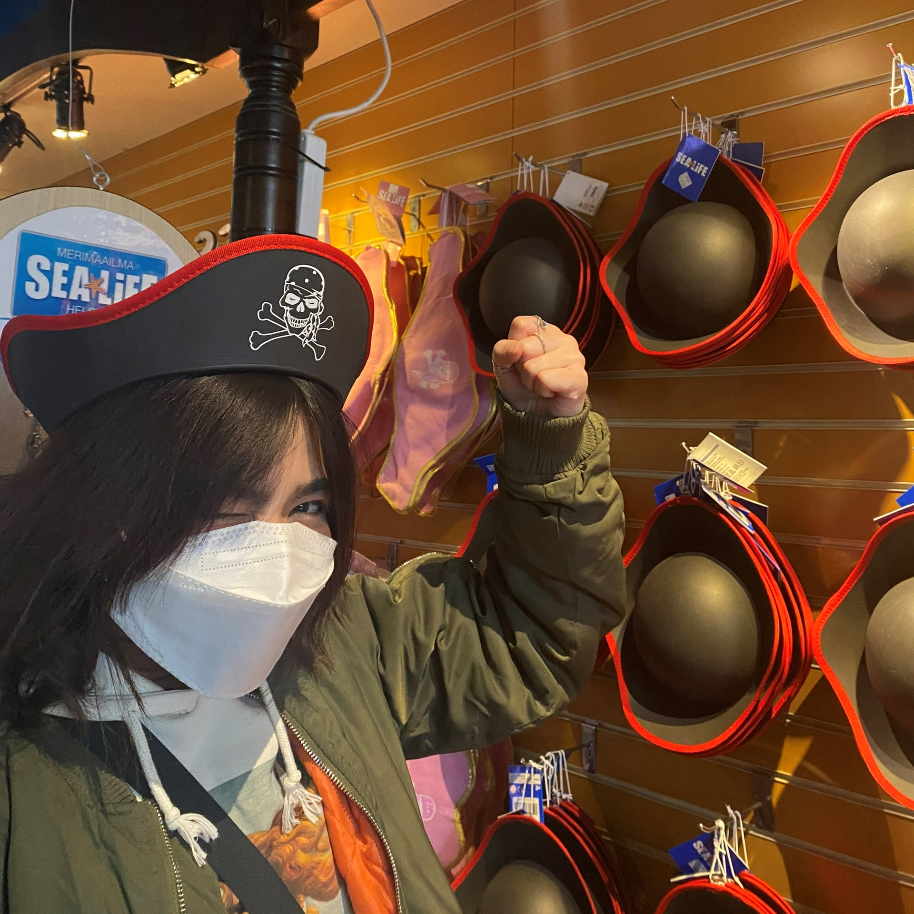

This is
My True Color
With the natural curiosity, I satisfy my "hunger" brain by
self-learning everything that I found interested in . Also, investigating
for myself knowledge and skills that are essential for developing my career path.

As an introvert, I seek for a frictionless environment, a spirit of friends helping friends to get the job done. Close-knit and supportive teams are what I enjoy most, allowing me to express my altruistic spirit among people who rely on my dedication and warmth. Also, a place with lots of clever and proficient people always make me satisfied the most. Working with those people not only makes me feel excited, energetic but also can improve myself better by learning from them :)
Education
LAB UNIVERISTY OF APPLIED SCIENCESBachelor of International Business
For me, a "fresh look" will never actually succeed in changing people's perspective if they are unaware of the "storytelling" that goes with it, and marketing is a way to "tell" the story to connect people's thoughts into the fresh look you are trying to express. Taking it into consideration, I decided to major in marketing as well as self-learning graphic design. Also, I have finished almost 85 percent of my study just within 2 years (with gpa by 4.0). I'm planning to graduate at the end of this year to look for opportunity of working and meeting excellent people out there.
Experiences
- Account Excutive Trainee
- Marketing Intern
- Adobe Photoshop
- Adobe Illustrator
- Self Learning
- Researching
- © Ngan Le
- Just call me: Celine
I was in charge of negotiating contracts with clients, aiding my Account Manager in developing the company's strategies, and managing the planning process. My other tasks are summarizing backlog problems from plans, organizing company's daily meeting and weekly meeting.
In my prior position, I was in charge of taking care of the company fanpage such as creating content and posting for fanpage as well as company websites. Also, creating posting assets, building social meadia campaigns materials, and completing clerical and adminstrative duties.
Skills
For myself, creating and designing are things that make my life feel more enjoyable and livelier. I have always been convinced that a look will allow people to see things in a different sight. Designing is the way that makes people understand and communicate with other despite distance. This is the reason why I self learn design in order to make "beautiful" things.
With the curious character, I never satisfy with what I have and I crave for more knowledge. Because of that, I love looking for opportunities to learn as much as I can. Then, through practice and trial or error, I can get for myself a lot of experiences as well as the mindset to cope with problems.
Along with self learning, I gainned this capability. And, during my previous work I was in charge of negotiating contracts with clients, aiding my Account Manager in developing the company's strategies, and managing the planning process. While doing so, I strengthen my problem-solving and analytic abilities, which are a result of my tasks of summarizing backlog problems from plans.